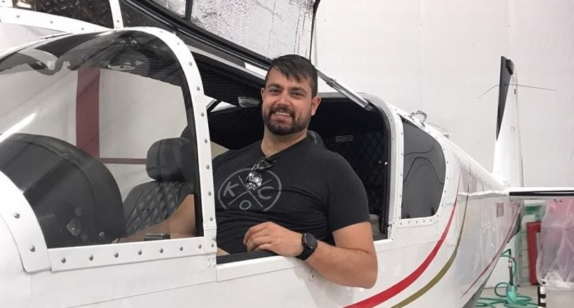

Hi, welcome to my little corner of the web. My name is Ross Brutsman, and I am very interested in learning Full Stack development amongst other things. I have worked very hard to build a career in engineering, mainly Process Engineering. Throughout this career, I have developed several software products to aid in that end. My most notable accomplishment is a proprietary package I built to gather, analzye, and store several aspects of a manufacturing process in the pharmaceutical industry. Other passions of mine include the flying, motorcycling, land speed records, etc. I hope to eventually document many of those projects on the web, as well as use this as a living C.V. If you would like to contact me professionally, please use linkedIn. As well, a limited selection of publicly available code can be found on my GitHub.
Thanks again!
-Ross